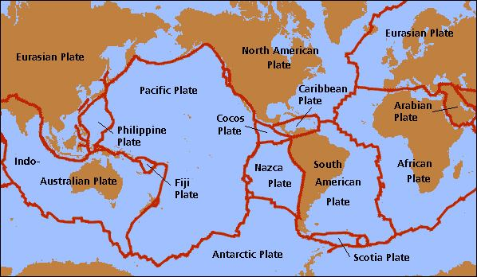

―It is God Who causes the seed-grain and the date-stone to split and sprout. He causes the living to issue from the dead, and He is the One to cause the dead to issue from the living. That is God. Then how are you deluded away from the truth? He it is that cleaves the day-break. He makes the night for rest and tranquility, and the sun and moon for the reckoning. Such is the judgment and ordering of the Exalted in Power, the Omniscient. It is He Who makes the stars for you that you may guide yourselves with their help through the dark spaces of land and sea. We detail Our Signs for people who know. It is He Who has produced you from a Nafs Single (Nafsin-Wahidatin / GUT Force+), so a place of dwelling, and a storage. We detail Our signs for people who understand. It is He Who sends down rain from the skies. With it We produce vegetation of all kinds. From some We produce green, out of which We produce grain, heaped up; out of the date-palm and its sheaths the clusters of dates hanging low and near, and gardens of grapes, and olives, and pomegranates each similar yet different. When they begin to bear fruit, feast your eyes with the fruit and the ripeness thereof. Behold! In these things there are Signs for people who believe.‖ [Al Quran 6:95-99]
- ঈশ্বরই বীজ-শস্য এবং খেজুর-পাথরকে বিদীর্ণ করেন এবং অঙ্কুরিত করেন। তিনিই জীবিতকে মৃত থেকে বের করেন এবং তিনিই মৃতকে জীবিত থেকে বের করে দেন। সেই ঈশ্বর। তাহলে আপনি সত্য থেকে দূরে সরে গেলেন কিভাবে? তিনি এটা যে দিন বিরতি cleaves. তিনি রাতকে করেছেন বিশ্রাম ও প্রশান্তি এবং সূর্য ও চন্দ্রকে হিসাব-নিকাশের জন্য। ক্ষমতায় পরাক্রমশালী, সর্বজ্ঞের বিচার ও আদেশ এমনই। তিনিই তোমাদের জন্য নক্ষত্র তৈরি করেছেন যাতে তোমরা তাদের সাহায্যে স্থল ও সমুদ্রের অন্ধকার স্থানের মধ্য দিয়ে নিজেদেরকে পথ দেখাতে পার। যারা জানে তাদের জন্য আমরা আমাদের নিদর্শনসমূহ বিস্তারিত করি। তিনিই আপনাকে একটি নফস একক (নাফসিন-ওয়াহিদাতিন / জিইউটি ফোর্স+) থেকে তৈরি করেছেন, তাই একটি বাসস্থান এবং একটি স্টোরেজ। যারা বোঝে তাদের জন্য আমরা আমাদের নিদর্শনসমূহ বিস্তারিত করি। তিনিই আকাশ থেকে বৃষ্টি বর্ষণ করেন। এটা দিয়ে আমরা সব ধরনের গাছপালা উৎপাদন করি। কিছু থেকে আমরা সবুজ উৎপন্ন করি, তা থেকে আমরা শস্য উৎপন্ন করি, স্তূপ করে রাখি; খেজুর ও তার আবরণ থেকে খেজুরের গুচ্ছ নীচে এবং কাছাকাছি ঝুলছে এবং আঙ্গুর, জলপাই এবং ডালিমের বাগানগুলি একই রকম তবে ভিন্ন। যখন তারা ফল ধরতে শুরু করে, তখন ফল এবং এর পরিপক্কতা দিয়ে আপনার চোখকে ভোজ করুন। দেখো! যারা ঈমান এনেছে তাদের জন্য এসবের মধ্যে নিদর্শন রয়েছে।'' [আল কুরআন ৬:৯৫-৯৯]
When a seed grain receives water and air, a series of chemical reactions take place, and its genome expression causes it to split and sprout. In the verses above, Allah says that He is the One who causes this. Allah provides the water and air, and He has designed them, which we perceive as natural laws. He has also fixed the genome to act accordingly. All creations exist and function within His extended elementary souls—He is the Sustainer and Evolver. Nothing can happen without Him. Therefore, He causes the seed grains to split and sprout. Allah has placed the stars in positions suitable for finding direction. The Pole Star, in particular, is widely used for navigation. It had to be far enough away so that Earth's orbit around the Sun appears as a point in relation to its distance, yet bright enough to be visible. It had to be positioned perfectly on the celestial North Pole. Thus, Allah drives the stars. Allah inspired the skies to carry out their affairs by designing their initial configurations. From the beginning, every object is moving toward its destiny. The flow along the path of destiny is driven by Him, either directly or indirectly. He is Time:
যখন একটি বীজ শস্য জল এবং বায়ু গ্রহণ করে, তখন রাসায়নিক বিক্রিয়ার একটি সিরিজ সঞ্চালিত হয় এবং এর জিনোম অভিব্যক্তি এটিকে বিভক্ত করে এবং অঙ্কুরিত করে। উপরের আয়াতে আল্লাহ বলেছেন যে তিনিই এর কারণ। আল্লাহ জল এবং বায়ু সরবরাহ করেন এবং তিনি সেগুলিকে ডিজাইন করেছেন, যা আমরা প্রাকৃতিক আইন হিসাবে উপলব্ধি করি। সেই অনুযায়ী কাজ করার জন্য তিনি জিনোমও ঠিক করেছেন। সমস্ত সৃষ্টি তার বর্ধিত প্রাথমিক আত্মার মধ্যে বিদ্যমান এবং কাজ করে - তিনিই ধারক এবং বিকাশকারী। তাঁকে ছাড়া কিছুই হতে পারে না। অতএব, তিনি বীজের দানাগুলিকে বিভক্ত ও অঙ্কুরিত করেন। আল্লাহ নক্ষত্রগুলোকে দিকনির্দেশনা খোঁজার উপযোগী অবস্থানে রেখেছেন। মেরু তারকা, বিশেষ করে, নেভিগেশনের জন্য ব্যাপকভাবে ব্যবহৃত হয়। এটি যথেষ্ট দূরে হতে হবে যাতে সূর্যের চারপাশে পৃথিবীর কক্ষপথ তার দূরত্বের সাথে সম্পর্কিত একটি বিন্দু হিসাবে প্রদর্শিত হয়, তবে দৃশ্যমান হওয়ার জন্য যথেষ্ট উজ্জ্বল। এটিকে স্বর্গীয় উত্তর মেরুতে নিখুঁতভাবে অবস্থান করতে হয়েছিল। এভাবে আল্লাহ নক্ষত্রগুলোকে চালিত করেন। আল্লাহ আকাশকে তাদের প্রাথমিক কনফিগারেশন ডিজাইন করে তাদের কার্য সম্পাদনের জন্য অনুপ্রাণিত করেছিলেন। শুরু থেকেই প্রতিটি বস্তুই তার ভাগ্যের দিকে এগিয়ে যাচ্ছে। নিয়তির পথে প্রবাহ প্রত্যক্ষ বা পরোক্ষভাবে তাঁর দ্বারা চালিত হয়। তিনি সময়:
―On the authority of Abu Hurayrah, who said that the Messenger of Allah said, Allah says: ―Children of Adam inveigh against Time; I am Time; I change the day and night‖‖ [Bukhari, Muslim]
আবু হুরায়রা (রাঃ) থেকে বর্ণিত, তিনি বলেন, রাসূলুল্লাহ সাল্লাল্লাহু আলাইহি ওয়াসাল্লাম বলেছেন, আল্লাহ বলেনঃ আদম সন্তানেরা সময়ের বিরুদ্ধে অপবাদ দেয়; আমি সময়; আমি দিনরাত পরিবর্তন করি” [বুখারী, মুসলিম]
Two dates from the same tree are different because they develop at different points in a constantly changing nature, evolving on a timescale. In this vast universe, spanning across an immense timescale, no one has the power to interfere.
একই গাছের দুটি তারিখ ভিন্ন কারণ তারা একটি ক্রমাগত পরিবর্তিত প্রকৃতিতে বিভিন্ন পয়েন্টে বিকাশ লাভ করে, একটি টাইমস্কেলে বিবর্তিত হয়। এই বিশাল মহাবিশ্বে, একটি বিশাল সময়সীমা জুড়ে বিস্তৃত, কারও হস্তক্ষেপ করার ক্ষমতা নেই।
―Say: of your ‗Partners‘, can any originate creation and repeat it? Say: It is Allah Who originates creation and repeats it. Then how are ye deluded away‖ [Al Quran 10:34]
- বলুন: আপনার 'অংশীদার', কেউ কি সৃষ্টির উদ্ভব এবং পুনরাবৃত্তি করতে পারে? বলুনঃ আল্লাহই সৃষ্টির সূচনা করেন এবং পুনরাবৃত্তি করেন। তাহলে তোমরা কিভাবে প্রতারিত হও” [আল কুরআন 10:34]
―The primordial fireball contained the reactions which led to the present distribution of hydrogen and helium 75% and 25% respectively a balance that explains the evolution of stars. Very small changes in the nature of the primordial fireball would have had an immense effect on the universe. If certain atomic forces had been only slightly greater, then all the hydrogen would have become an isotope of helium and no long-lived stars could exist as they do at present. They would have been explosive. Stars would have formed but they would have used up all their energy in a very short time. There would have been no star like the sun, which gives an output of energy for thousands of millions of years. It is only with the stability on this time scale the life can evolve. If things had been just a little bit different at the beginning, therefore, there could have been no life, and the universe would be unknowable.‖ – Dawn of a New Era by Sir Bernard Lovell in The Encyclopedia of Space Travel and Astronomy edited by John Man. ―These things are to me immensely strange. Is it not extraordinary that the possibility of talking here this afternoon depends on events which were very narrowly determined over 10,000 million years ago in the very earliest moments of the universe?‖ – Dawn of a New Era by Sir Bernard Lovell in The Encyclopedia of Space Travel and Astronomy edited by John Man.
- আদিম ফায়ারবলে এমন প্রতিক্রিয়া রয়েছে যার ফলে হাইড্রোজেন এবং হিলিয়ামের বর্তমান বন্টন যথাক্রমে 75% এবং 25% একটি ভারসাম্য যা নক্ষত্রের বিবর্তন ব্যাখ্যা করে। আদিম অগ্নিগোলের প্রকৃতিতে খুব ছোট পরিবর্তন মহাবিশ্বের উপর ব্যাপক প্রভাব ফেলবে। যদি নির্দিষ্ট পারমাণবিক শক্তি শুধুমাত্র সামান্য বেশি হতো, তাহলে সমস্ত হাইড্রোজেন হিলিয়ামের একটি আইসোটোপে পরিণত হতো এবং বর্তমানের মতো কোনো দীর্ঘজীবী তারা থাকতে পারত না। তারা বিস্ফোরক হবে. নক্ষত্রগুলি তৈরি হত কিন্তু তারা খুব অল্প সময়ের মধ্যে তাদের সমস্ত শক্তি ব্যবহার করত। সূর্যের মতো কোন তারা থাকত না, যেটি হাজার হাজার কোটি বছর ধরে শক্তির আউটপুট দেয়। এই টাইম স্কেলে স্থিতিশীলতা থাকলেই জীবন বিকশিত হতে পারে। যদি জিনিসগুলি শুরুতে একটু অন্যরকম হত, তাহলে, কোনও জীবন থাকতে পারত না, এবং মহাবিশ্ব অজানা থাকত।'' - জন ম্যান দ্বারা সম্পাদিত দ্য এনসাইক্লোপিডিয়া অফ স্পেস ট্র্যাভেল অ্যান্ড অ্যাস্ট্রোনমিতে স্যার বার্নার্ড লাভেলের ডন অফ এ নিউ এরা। - এই জিনিসগুলি আমার কাছে অত্যন্ত অদ্ভুত। এটা কি অসাধারণ নয় যে আজ বিকেলে এখানে কথা বলার সম্ভাবনা মহাবিশ্বের প্রথম মুহুর্তে 10,000 মিলিয়ন বছর আগে খুব সংক্ষিপ্তভাবে নির্ধারিত হয়েছিল এমন ঘটনার উপর নির্ভর করে?'' - জন ম্যান দ্বারা সম্পাদিত দ্য এনসাইক্লোপিডিয়া অফ স্পেস ট্রাভেল অ্যান্ড অ্যাস্ট্রোনমিতে স্যার বার্নার্ড লাভেলের ডন অফ এ নিউ এরা।
The universe evolved from a united entity and is governed as a single unit by one Creator. There is no room for another Creator.
মহাবিশ্ব একটি ঐক্যবদ্ধ সত্তা থেকে বিবর্তিত হয়েছে এবং এক স্রষ্টার দ্বারা একক একক হিসাবে পরিচালিত হয়। অন্য সৃষ্টিকর্তার জন্য কোন স্থান নেই।
―Say: Have you seen ‗Partners‘ of yours whom ye call upon besides Allah? Show me what it is they have created in the land. Or have they a share in the Skies? Or have We given them a book from which they clear? Nay the wrongdoers promise each other nothing but delusions. It is Allah who sustains the ‗Skies and Lands‘ (Universe) lest they cease, and if they should fail, there is none—not one—can sustain them thereafter. Verily He is most Forbearing, oft-Forgiving‖ [Al Quran 35: 40–41]
বলুন, তোমরা কি তোমাদের অংশীদারদের দেখেছ যাদেরকে তোমরা আল্লাহ ব্যতীত ডাক? আমাকে দেখাও যে তারা পৃথিবীতে কি সৃষ্টি করেছে। নাকি আকাশে তাদের ভাগ আছে? নাকি আমি তাদেরকে কোন কিতাব দিয়েছি যা থেকে তারা পরিষ্কার করে? বরং জালেমরা একে অপরকে প্রলাপ ছাড়া আর কিছুই দেয় না। আল্লাহই ‘আকাশ ও জমিন’ (মহাবিশ্ব)কে টিকিয়ে রাখেন, পাছে তারা থেমে যায়, এবং যদি তারা ব্যর্থ হয়, তবে এরপরে কেউই তাদের টিকিয়ে রাখতে পারে না। নিশ্চয় তিনি পরম সহনশীল, ক্ষমাশীল” [আল কুরআন ৩৫:৪০-৪১]
Return to the Creator who is capable of creating such a vast universe. Return to the Creator who sustains and evolves it. Only He can sustain and evolve it—an atom is too small to sustain, and the universe too vast. We have not seen Him, nor can we imagine Him, but He exists. We come and pass away with the hope of resurrection, because He exists forever and never forgets.
প্রত্যাবর্তন সেই সৃষ্টিকর্তার কাছে যিনি এত বিশাল মহাবিশ্ব সৃষ্টি করতে সক্ষম। সৃষ্টিকর্তার কাছে ফিরে আসুন যিনি এটিকে টিকিয়ে রাখেন এবং বিকশিত করেন। শুধুমাত্র তিনিই এটিকে টিকিয়ে রাখতে পারেন এবং বিকশিত করতে পারেন - একটি পরমাণু টিকিয়ে রাখার জন্য খুবই ছোট, এবং মহাবিশ্ব অত্যন্ত বিশাল। আমরা তাঁকে দেখিনি, কল্পনাও করতে পারিনি, কিন্তু তিনি আছেন। আমরা আসি এবং পুনরুত্থানের আশা নিয়ে চলে যাই, কারণ তিনি চিরকাল আছেন এবং কখনও ভুলে যান না।
―Say: He is Allah, The One and Only. Allah, the Eternal, Absolute. He begets not, nor is He begotten. And there is none Like unto Him.‖ [Al Quran 112:1-4]
- বলুনঃ তিনিই আল্লাহ, একক ও অদ্বিতীয়। আল্লাহ, চিরন্তন, পরম। তিনি জন্ম দেন না এবং তিনি জন্মগ্রহণ করেন না। এবং তাঁর সমতুল্য কেউ নেই।'' [আল কুরআন 112:1-4]
15. Conclusion
15. উপসংহার
Scientific theories may change, but they will not alter the matters described in the Quran. For instance, the Quran states that the universe is expanding, that the night is dark because of this expansion, and that the universe was created from smoke. In these matters, scientific theories will not change. Theories may differ and are likely to change. There is room to develop different models of the universe. If a theory contradicts the Quran, it should be understood that the theory is incorrect. For example, in the 19th century, the prevailing theories suggested that the universe was static, but the Quran suggested that the universe was expanding. Today, scientists have corrected their views. 16. Summary
বৈজ্ঞানিক তত্ত্বগুলি পরিবর্তিত হতে পারে, তবে তারা কুরআনে বর্ণিত বিষয়গুলিকে পরিবর্তন করবে না। উদাহরণস্বরূপ, কুরআন বলে যে মহাবিশ্ব সম্প্রসারিত হচ্ছে, এই সম্প্রসারণের কারণে রাত অন্ধকার, এবং মহাবিশ্ব ধোঁয়া থেকে সৃষ্টি হয়েছে। এই বিষয়ে, বৈজ্ঞানিক তত্ত্ব পরিবর্তন হবে না. তত্ত্ব ভিন্ন হতে পারে এবং পরিবর্তন হতে পারে। মহাবিশ্বের বিভিন্ন মডেল বিকাশের জায়গা আছে। যদি কোন তত্ত্ব কুরআনের সাথে সাংঘর্ষিক হয় তবে বুঝতে হবে যে তত্ত্বটি ভুল। উদাহরণস্বরূপ, 19 শতকে, প্রচলিত তত্ত্বগুলি পরামর্শ দিয়েছিল যে মহাবিশ্ব স্থির, কিন্তু কুরআন পরামর্শ দিয়েছে যে মহাবিশ্ব প্রসারিত হচ্ছে। আজ, বিজ্ঞানীরা তাদের মতামত সংশোধন করেছেন। 16. সারাংশ
The universe is expanding, with galaxies receding from one another. The creation of the universe began from a primordial soul, breathed out by God. The primordial soul is referred to as a Soul Single or Nafsin-Wahidatin (GUT Force+), which fragmented to produce matter. The souls (nafses) of living creatures were also created from several kinds of unknown force fields (not yet discovered) that were extracted from the same Nafsin- Wahidatin. The souls were preserved to give the material lives in turn. The Quran narrates the creation and evolution correctly. Therefore, the narration of the future should be correct. The Future is discussed in Section-10 of this Chapter.
মহাবিশ্ব প্রসারিত হচ্ছে, গ্যালাক্সিগুলি একে অপরের থেকে সরে যাচ্ছে। মহাবিশ্বের সৃষ্টি একটি আদিম আত্মা থেকে শুরু হয়েছিল, ঈশ্বরের দ্বারা নিঃশ্বাস ত্যাগ করা হয়েছিল। আদি আত্মাকে একক আত্মা বা নাফসিন-ওয়াহিদাতিন (GUT ফোর্স+) হিসাবে উল্লেখ করা হয়, যা পদার্থ তৈরি করতে খণ্ডিত হয়। জীবন্ত প্রাণীদের আত্মা (নফসেস)ও একই নাফসিন-ওয়াহিদাতিন থেকে আহরিত বিভিন্ন ধরণের অজানা শক্তি ক্ষেত্র (এখনও আবিষ্কৃত হয়নি) থেকে সৃষ্টি হয়েছিল। পালাক্রমে বস্তুগত জীবন দিতে আত্মা সংরক্ষণ করা হয়েছিল। কুরআন সঠিকভাবে সৃষ্টি ও বিবর্তন বর্ণনা করে। অতএব, ভবিষ্যতের বর্ণনা সঠিক হতে হবে। ভবিষ্যত এই অধ্যায়ের ধারা-10 এ আলোচনা করা হয়েছে।
Segment-2 Approaching Last Day and its Evolution
সেগমেন্ট-2 শেষ দিনের কাছাকাছি আসা এবং এর বিবর্তন
Section 5 of Chapter 21 [Verse 31]: Creation of the Earth
অধ্যায় 21 [পদ 31] এর অধ্যায় 5: পৃথিবীর সৃষ্টি
And We have set on the earth mountains standing firm lest it should shake with them, and We have made therein broad highways for them to pass through that they may receive Guidance. Remarks:
আর আমি পৃথিবীতে পর্বতমালা স্থাপন করেছি যাতে তা তাদের নিয়ে ঝাঁকুনি না দেয় এবং আমি তাতে তাদের জন্য প্রশস্ত রাস্তা দিয়েছি যাতে তারা পথপ্রদর্শন করতে পারে। মন্তব্য:
A look at the globe reveals that the continents were once joined together and later drifted apart. The continents rest on giant tectonic plates that move atop the asthenosphere below. I have deliberately discussed continental drift in Section 3 of Chapter 13.
পৃথিবীর দিকে নজর দিলে দেখা যায় যে মহাদেশগুলো একবার একত্রে যুক্ত হয়েছিল এবং পরে বিচ্ছিন্ন হয়ে গেছে। মহাদেশগুলি বিশাল টেকটোনিক প্লেটের উপর বিশ্রাম নেয় যা নীচের অ্যাথেনোস্ফিয়ারের উপরে চলে। আমি 13 অধ্যায়ের অধ্যায় 3-এ ইচ্ছাকৃতভাবে মহাদেশীয় প্রবাহ নিয়ে আলোচনা করেছি।
FIGURE 21.11: Tectonic Plates

চিত্র 21_11 / Figure 21_11
চিত্র 21.11: টেকটোনিক প্লেট
চিত্র 21_11 / Figure 21_11
The formation of mountain ranges is closely related to continental drift. When two continental plates collide and neither is pushed beneath the other, the plates crumple and form mountain ranges, such as the Himalayas. When one plate is forced beneath another, it causes volcanic eruptions and forms mountains, such as the Andes. When plates collide under the sea, they create volcanic islands. As tectonic plates move, they interact along their boundaries, making these areas notable earthquake zones. However, the mountain ranges formed along these boundaries add density and weight to these regions, acting as natural shock absorbers. The verses also mention broad highways through the mountain ranges: "and We have made therein broad highways for them to pass through, that they may receive Guidance." These routes through the mountains demonstrate that the land is crafted for human use. However, the verse says, "…that they may receive Guidance." More than fourteen hundred years have passed since the Quran was revealed. We now understand that this verse likely refers to two major passes: the Khyber Pass and the Bolan Pass, which connect India with Central Asia. Through these passes, Muslims entered India to preach Islam.
পর্বতশ্রেণীর গঠন মহাদেশীয় প্রবাহের সাথে ঘনিষ্ঠভাবে সম্পর্কিত। যখন দুটি মহাদেশীয় প্লেট সংঘর্ষে পড়ে এবং একটিও অন্যটির নীচে ঠেলে দেওয়া হয় না, তখন প্লেটগুলি ভেঙে যায় এবং হিমালয়ের মতো পর্বতশ্রেণী তৈরি করে। যখন একটি প্লেট অন্য প্লেটের নিচে বাধ্য হয়, তখন এটি আগ্নেয়গিরির অগ্ন্যুৎপাত ঘটায় এবং পর্বত গঠন করে, যেমন আন্দিজ। যখন প্লেট সমুদ্রের নীচে সংঘর্ষ হয়, তারা আগ্নেয় দ্বীপ তৈরি করে। টেকটোনিক প্লেটগুলি সরানোর সাথে সাথে, তারা তাদের সীমানা বরাবর মিথস্ক্রিয়া করে, এই এলাকাগুলিকে উল্লেখযোগ্য ভূমিকম্প অঞ্চল করে তোলে। যাইহোক, এই সীমানা বরাবর গঠিত পর্বতশ্রেণীগুলি এই অঞ্চলগুলিতে ঘনত্ব এবং ওজন যোগ করে, প্রাকৃতিক শক শোষণকারী হিসাবে কাজ করে। আয়াতে পর্বতমালার মধ্য দিয়ে প্রশস্ত মহাসড়কের কথাও বলা হয়েছে: "এবং আমরা সেখানে তাদের মধ্য দিয়ে যাওয়ার জন্য প্রশস্ত মহাসড়ক তৈরি করেছি, যাতে তারা পথপ্রদর্শন করতে পারে।" পাহাড়ের মধ্য দিয়ে এই পথগুলি দেখায় যে জমিটি মানুষের ব্যবহারের জন্য তৈরি করা হয়েছে। যাইহোক, আয়াতটি বলে, "...যাতে তারা হেদায়েত লাভ করতে পারে।" কুরআন নাযিল হওয়ার পর চৌদ্দশত বছরেরও বেশি সময় অতিবাহিত হয়েছে। আমরা এখন বুঝি যে এই আয়াতটি সম্ভবত দুটি প্রধান গিরিপথকে নির্দেশ করে: খাইবার গিরিপথ এবং বোলান গিরিপথ, যা ভারতকে মধ্য এশিয়ার সাথে সংযুক্ত করেছে। এই পাসের মাধ্যমে মুসলমানরা ইসলাম প্রচারের জন্য ভারতে প্রবেশ করে।
Section-6 of Chapter 21 [Verse 32-33]: Protecting Roof
অধ্যায় 21 এর ধারা-6 [পদ 32-33]: ছাদ রক্ষা করা
And We have made the sky as a canopy guarding, yet do they turn away from the signs which these things (point to)!
আর আমি আকাশকে করেছি প্রহরী ছাউনি, তথাপি তারা কি সেই নিদর্শন থেকে মুখ ফিরিয়ে নেয়, যেগুলোর প্রতি এই বিষয়গুলো নির্দেশ করে!
Remarks:
মন্তব্য:
The sky has been made a protective canopy, regulating temperature and shielding living creatures from harmful radiation.
আকাশকে একটি প্রতিরক্ষামূলক ছাউনি তৈরি করা হয়েছে, যা তাপমাত্রা নিয়ন্ত্রণ করে এবং জীবন্ত প্রাণীদের ক্ষতিকর বিকিরণ থেকে রক্ষা করে।
1. The atmosphere protects us from harmful radiation. Only visible light and infrared radiation reach the ground, while harmful radiations such as X-rays and ultraviolet rays are absorbed or reflected by the thermosphere, mesosphere, and stratosphere. FIGURE 21.12: Radiation and Atmosphere

চিত্র 21_12 / Figure 21_12
1. বায়ুমণ্ডল আমাদের ক্ষতিকর বিকিরণ থেকে রক্ষা করে। শুধুমাত্র দৃশ্যমান আলো এবং ইনফ্রারেড বিকিরণ মাটিতে পৌঁছায়, যখন ক্ষতিকারক বিকিরণ যেমন এক্স-রে এবং অতিবেগুনী রশ্মি থার্মোস্ফিয়ার, মেসোস্ফিয়ার এবং স্ট্রাটোস্ফিয়ার দ্বারা শোষিত বা প্রতিফলিত হয়। চিত্র 21.12: বিকিরণ এবং বায়ুমণ্ডল
চিত্র 21_12 / Figure 21_12
2. The atmosphere regulates temperature through the greenhouse effect.
2. বায়ুমণ্ডল গ্রীনহাউস প্রভাবের মাধ্যমে তাপমাত্রা নিয়ন্ত্রণ করে।